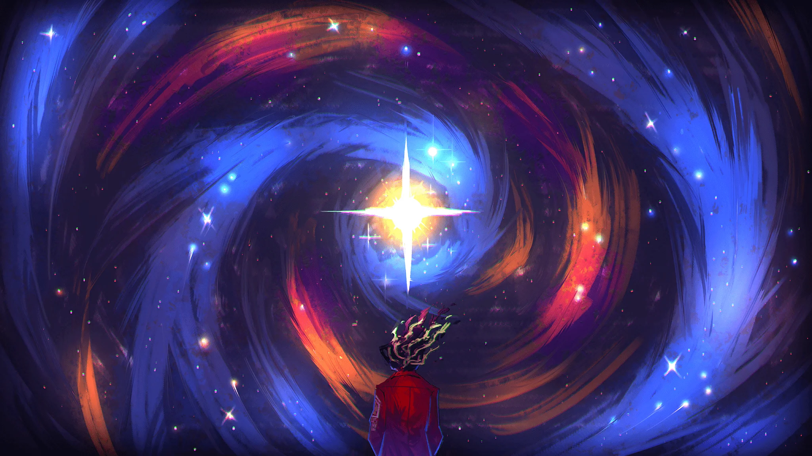

Sobre los efectos de status
Como funcionan
Los efectos de estado:
En el juego hay 7 efectos principales Bleed, rupture, sinking, poise, tremor, burn y cargas Los efectos tienen una particularidad y es que los personajes y enemigos pueden inflingir potencia o contador, la potencia por ejemplo en el sangrado sería que al enemigo intentar golpear se hace el daño dependiendo la potencia y el contador se hace el daño la cantidad de veces que tenga el contador
Cada efecto funciona de manera distinta, el bleed hace el daño al objetivo cuando intenta atacar, si hace un esquive o una defensa pierde 1 de contador y no se activa el efecto. El tremor no hace nada a menos que se explote con tremor burst, el tremor hace que la barra de aturdimiento requiera de perder menos vida para activarse. El sinking hace que al recibir un golpe se pierda la cantidad de sinking/2 en cordura, haciendo mas fácil ganar los choques (a menos que el rival sea de cordura negativa). El fuego pega el daño de la potencia al finalizar cada turno. El poise es un efecto autoinfligido que le da al portador chance para pegar golpes críticos, la chance crítica es la potencia * 5 en porcentaje Las cargas también son un efecto autoinfligido que mejora el poder de clash de algunas habilidades y el daño de estas. El rupture es un efecto que se le inflinge a los rivales y hace daño verdadero dependiendo la cantidad de potencia y lo repite dependiendo la cantidad de contador
Cada una de estas tiene variaciones como por ejemplo el burn, que tiene la dark flame, es un fuego que re hace todo el daño de fuego, haciendo que supere su límite de 99 a 198. También hay variaciones mixtas como los clavos qué si es un ataque corte le inflinge sangrado al enemigo pero si es un ataque contundente le inflinge tremor burst.
También hay efectos de pasivas que afectar en equipo, por ejemplo "Gaze" que les da aumento de daño a los de la corporación N
 fuego: es un efecto de estado que inflige daño fijo adicional a la unidad afectada. Al final del turno, la unidad recibirá daño fijo igual a la Potencia de Quemadura, y el Contador de Quemadura se reducirá en 1.
fuego: es un efecto de estado que inflige daño fijo adicional a la unidad afectada. Al final del turno, la unidad recibirá daño fijo igual a la Potencia de Quemadura, y el Contador de Quemadura se reducirá en 1.
 sangrado: es un efecto de estado que inflige daño fijo adicional a la unidad afectada. Por cada lanzamiento de moneda de habilidad de ataque, o por cada choque individual con una habilidad de ataque, la unidad sangrado recibe daño fijo igual a la potencia de sangrado, y el contador de sangrado se reduce en 1.
sangrado: es un efecto de estado que inflige daño fijo adicional a la unidad afectada. Por cada lanzamiento de moneda de habilidad de ataque, o por cada choque individual con una habilidad de ataque, la unidad sangrado recibe daño fijo igual a la potencia de sangrado, y el contador de sangrado se reduce en 1.
 Tremor: es un efecto de estado que aumenta el umbral de tambaleo de una unidad afectada en una cantidad igual a la potencia de temblor. El contador de temblor disminuye en 1 al final del turno y puede disminuir por habilidades que activan Explosión de temblor .
Tremor: es un efecto de estado que aumenta el umbral de tambaleo de una unidad afectada en una cantidad igual a la potencia de temblor. El contador de temblor disminuye en 1 al final del turno y puede disminuir por habilidades que activan Explosión de temblor .
 Rupture: es un efecto de estado que inflige daño fijo adicional a la unidad afectada. Al ser golpeada, la unidad con Ruptura recibirá daño adicional igual a la Potencia de Ruptura, y el Contador de Ruptura se reducirá en 1.
Rupture: es un efecto de estado que inflige daño fijo adicional a la unidad afectada. Al ser golpeada, la unidad con Ruptura recibirá daño adicional igual a la Potencia de Ruptura, y el Contador de Ruptura se reducirá en 1.
 Sinking: es un efecto de estado que inflige daño a la cordura a la unidad afectada. Al ser golpeada, la unidad con sinking recibira daño a la cordura dependiendo la Potencia/2 y el contador se reduce en 1.
Sinking: es un efecto de estado que inflige daño a la cordura a la unidad afectada. Al ser golpeada, la unidad con sinking recibira daño a la cordura dependiendo la Potencia/2 y el contador se reduce en 1.
 Poise: Es un efecto que se gana para si mismo tras usar ciertas habilidades y ademas de darte 20% mas de daño, usa la potencia para aumentar la chance critica, el calculo seria Potency (Crit chance = (Potency * 5)%).
Poise: Es un efecto que se gana para si mismo tras usar ciertas habilidades y ademas de darte 20% mas de daño, usa la potencia para aumentar la chance critica, el calculo seria Potency (Crit chance = (Potency * 5)%).
 Charge: Es un efecto de estado que se obtiene mediante ciertas habilidades para mejorar sus efectos. El contador de cargas disminuye en 1 por turno. Las habilidades de cargan varian por el personaje.
Charge: Es un efecto de estado que se obtiene mediante ciertas habilidades para mejorar sus efectos. El contador de cargas disminuye en 1 por turno. Las habilidades de cargan varian por el personaje.